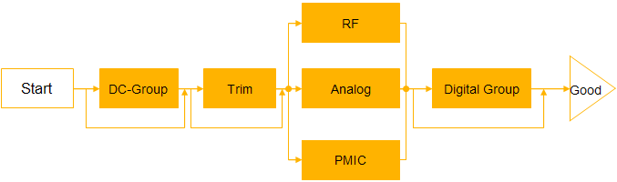

Recommended Testflow order and structure
In order to take advantage of expertise and best practices on troughput optimization, you will need to apply certain rules when designing testflows.
Your testflow needs to be designed on a recommended order. The following picture shows a typical tesflow design for throughput optimization.

The following possibilities are enabled by design in such a testflow:
- Exit the testflow as soon as possible in case of failing testsuites.
- Digital test can run during upload/calculation of analog/RF (SmarTCalc).
- Groups of testsuites with same primaries can run without changing primaries.
- Parametric tests are performed at the very beginning of the testflow.